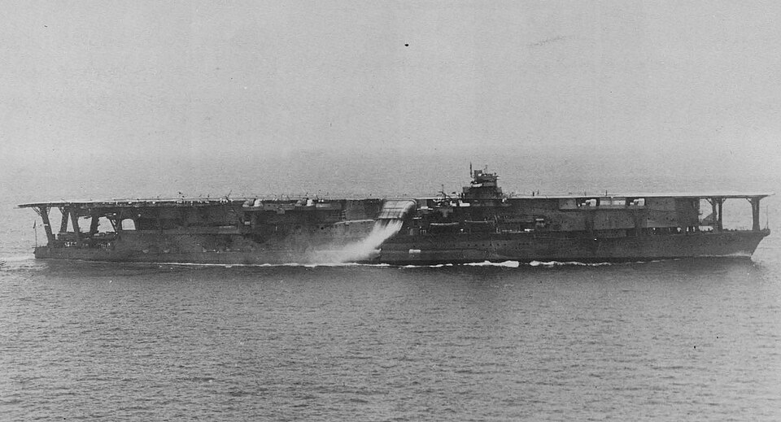

Kaga
Portaviones de Japón, perteneciente a la clase Kaga. Procedía de un proyecto de acorazado convertido en portaviones.

Diseño y función
Kaga pertenecía a la clase Kaga. Operaciones aéreas de ataque y protección de la flota. Sus prestaciones se detallan en la tabla técnica, con las fechas o condiciones disponibles en la referencia.
Operaciones y trayectoria
Procedía de un proyecto de acorazado convertido en portaviones. Participó en el ataque contra Pearl Harbor y en operaciones de la primera fase de la guerra del Pacífico.
Destino final y conservación
Perdido en la batalla de Midway el 4 de junio de 1942, tras sufrir ataques aéreos y extensos incendios.